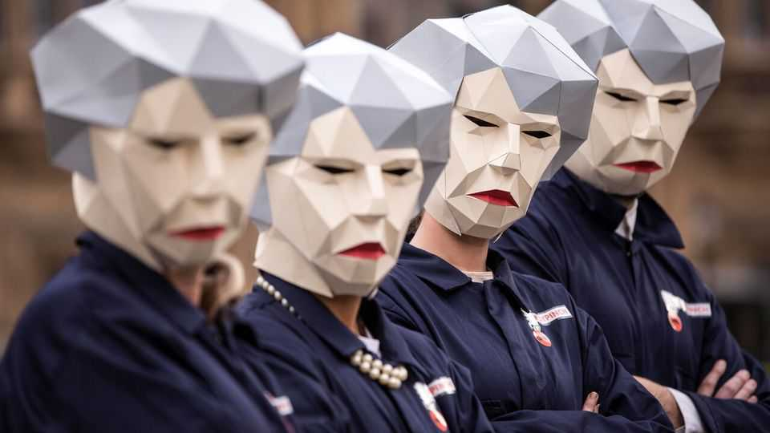
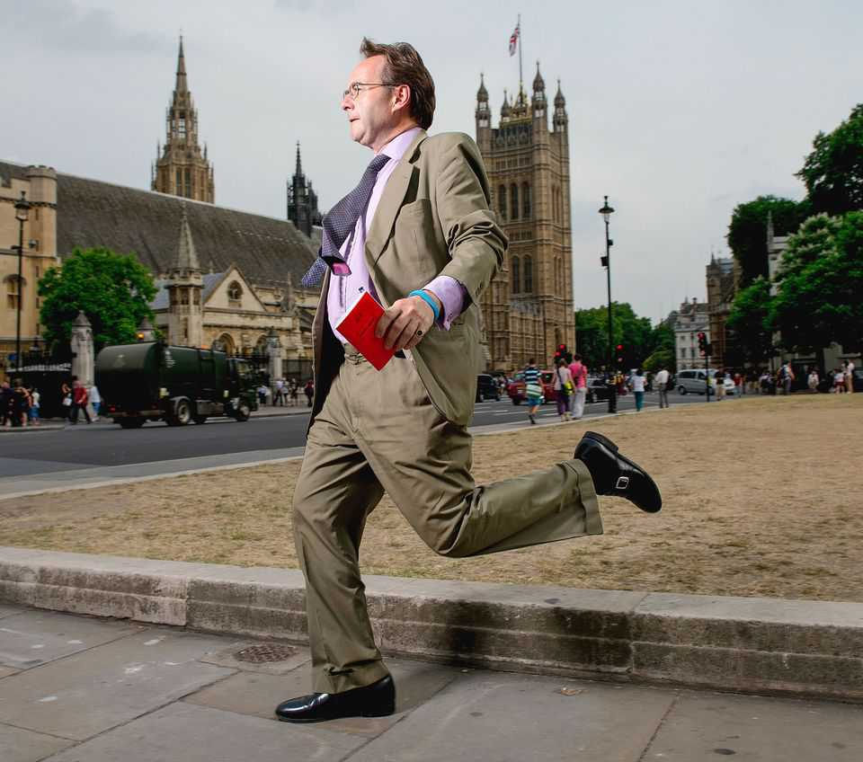

Mockery keeps Britain’s politicians honest. (Almost)
The ancient art of the parliamentary sketch is thriving in the digital era

Oct 22nd 2026
“The sluice gates of mediocrity opened. Before long the audience were up to their beaks in it, like chickens in a flash flood.” The Daily Mail’s verdict on a recent speech by Lucy Powell, Britain’s education secretary, was not kind. Nor was the Times’s on Sir Ed Davey, leader of the Liberal Democrats, who “looked and sounded, as he always does, like a smiley rural GP doling out cod-liver oil to old ladies” during his party-conference speech in September.
Both got off lightly compared with the Conservatives’ shadow chancellor. “Even 20 minutes of Andrew Griffith can rip your soul in half,” the Guardian wrote in October. “Griffith proceeded to give the worst speech ever heard. Not just in content but in delivery. It was like watching a less sentient version of the PG Tips monkey.”
Such indelicate sentiments are common on social media, but in most countries they rarely grace the pages of mainstream newspapers. On Fleet Street, however, they are positively encouraged. For that you can thank the ancient, still-thriving art of the British parliamentary sketch.
When John Healey, the chancellor, delivers his first budget on October 28th, he will care most about the responses of MPs, voters and the bond market. But he will probably keep half an eye on the sketches, too, since a well-turned phrase in a sketch can dog a politician for the rest of their career. Theresa May, while prime minister, never managed to escape the nickname of “Maybot”, attached to her by the Guardian’s John Crace after a particularly robotic set of interviews about Brexit.
A sketch has nothing to do with drawing. Rather, it is a comic but factual report of a political news event—usually parliamentary proceedings, a speech or an interview. It recounts what was said and what the sketch writer thought of it, along with plenty of jokes at the politicians’ expense. Four daily newspapers and two magazines employ sketch writers; in contrast, all British media outlets between them now employ only one trade-union correspondent. The practice began in the early 19th century and every sketch writer dreams of reaching the heights of their greatest predecessor, Charles Dickens, who wrote for the Mirror of Parliament.

Other Fleet Street traditions, such as spot-the-ball competitions and topless “page three girls”, have died in the age of the internet. But the sketch lives on. The chaos of the Brexit era helped, according to Mr Crace: “The sketch was reborn, because it was sometimes the only thing that could capture the hallucinogenic nature of politics at the time.” Another reason for its survival, says Rob Hutton, who writes sketches for the Critic, a magazine, is that practitioners of the art can be “more honest”. News reporters, by contrast, might feel uneasy about straightforwardly accusing politicians of lying.
What makes a good sketch? For Mr Crace, the important thing is to identify the issue of the day and shine a light on it. Quentin Letts of the Daily Mail takes a different approach: he files reports from the most obscure Commons debates, and enjoys bringing little-known politicians to life. (Keir Mather, a junior transport minister, “looks about 14 and is almost definitely yet to buy his first razor”, Mr Letts noted archly in a recent piece.)
The sketch squad agree that a good one does more than make readers laugh; it illuminates the psychology of the powerful. “The best sketch writer is a political thinker,” says Sir Peter Stothard, a former editor of the Times. Mr Hutton sees potential in exposing the gap between how Andy Burnham sees himself—as a blokey outsider to Westminster—and how the prime minister comes across to others.
Not all MPs fear being brutalised in a sketch. Sir Robert Buckland, a former Conservative cabinet minister, says he considered it a “badge of honour” to be mocked. Commons colleagues sit around in parliamentary cafés reading choice excerpts out loud to each other, he adds. He has no sympathy for the sketch writers’ victims: “It’s like sailors complaining about the sea, isn’t it, really? Don’t get on the water if you don’t like it.” ■